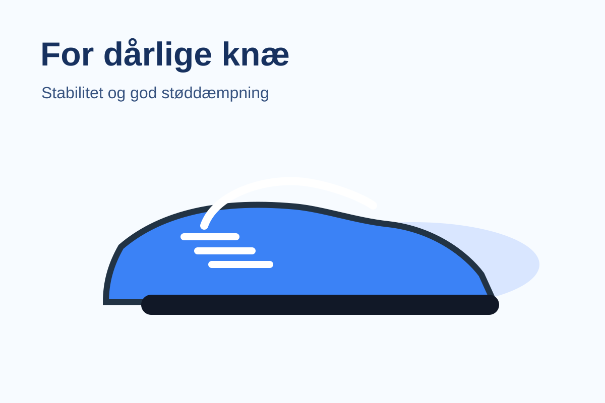

SoftRun Comfort
Blød løbesko med fokus på dæmpning til asfalt.
KnævenligEn simpel statisk hjemmeside, der hjælper brugeren med at vælge den rette løbesko ud fra behov, skader og løbestil.
 Tip: Brug siden som udgangspunkt i jeres design, dokumentation og GitHub-proces.
Tip: Brug siden som udgangspunkt i jeres design, dokumentation og GitHub-proces.

Hvis man har ømme eller svage knæ, er det ofte en fordel at vælge en sko med god støddæmpning og stabil pasform.
Blød løbesko med fokus på dæmpning til asfalt.
KnævenligStabil model til daglig træning og roligt tempo.
StøddæmpningVelegnet til nye løbere med behov for komfort.
Begynder